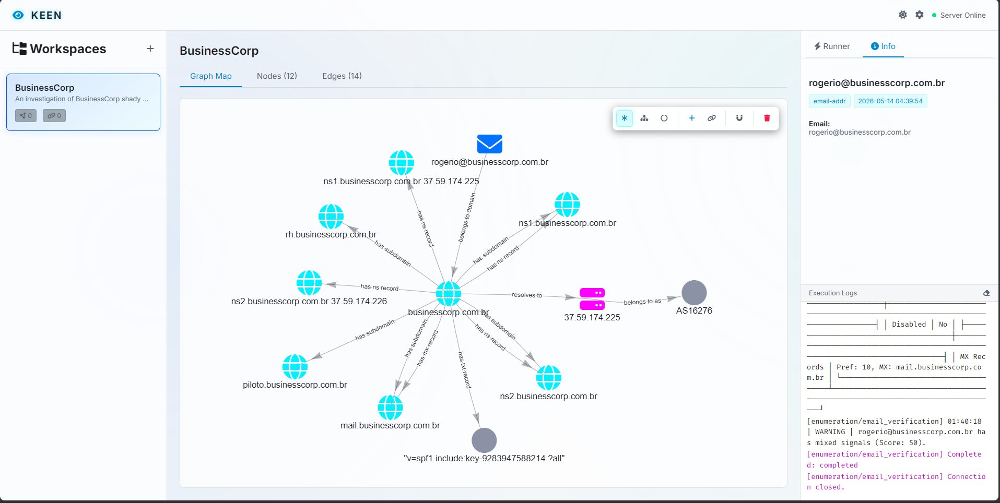

Web Server & REST API
Keen provides a robust Web Server built on FastAPI and Uvicorn, enabling both an interactive visual dashboard and a fully documented RESTful API for integration and automation.
Launching the Web Server
You can start the web server from your terminal or directly within the Keen interactive shell:
# From the command line
python keen.py --web --host 127.0.0.1 --port 8000
# With live reloading and debug logging enabled
python keen.py --web --host 127.0.0.1 --port 8000 --debug
Once running, the web server provides three primary interfaces:
- Interactive UI Dashboard: http://127.0.0.1:8000/dashboard
- Interactive REST API Docs (Swagger UI): http://127.0.0.1:8000/docs (or via
/api) - OpenAPI Schema: http://127.0.0.1:8000/openapi.json
The Interactive UI Dashboard
Mounted at /dashboard, the web interface provides a rich environment for security investigators:
- Graph Visualization: Visually explore intelligence nodes and relationship edges. Drag, drop, and rearrange nodes to uncover connections. Node positions are automatically saved across sessions.
- Case Management: Switch between active workspaces, create new cases, or export complete intelligence graphs in standard formats.
- Module Execution: Configure target options and trigger reconnaissance modules directly from your browser.

REST API Endpoints
FastAPI automatically generates comprehensive OpenAPI documentation. Navigating to /docs allows you to inspect request schemas, test endpoints live, and review responses.
Below is an overview of the core REST API endpoints available:
Workspace & Case Management
GET /api/workspaces: Retrieve all registered workspaces along with active node and edge metrics.POST /api/workspaces: Create a new workspace database.PUT /api/workspaces/{name}: Rename an existing workspace.DELETE /api/workspaces/{name}: Delete a workspace from the registry.
Intelligence Graph (Nodes & Edges)
GET /api/workspaces/{name}/nodes: Fetch all intelligence nodes (STIX 2.1 / MISP objects) in a workspace.POST /api/workspaces/{name}/nodes: Manually create a custom intelligence node.DELETE /api/workspaces/{name}/nodes/{node_id}: Remove a specific node from the investigation graph.GET /api/workspaces/{name}/edges: Retrieve all relationship edges linking nodes.POST /api/workspaces/{name}/edges: Create a directional relationship between two nodes.DELETE /api/workspaces/{name}/edges/{edge_id}: Remove a relationship edge.POST /api/workspaces/{name}/nodes/positions: Update and persist 2D graph layout coordinates (x,y).
Framework Configuration & Modules
GET /api/modules: List all loaded intelligence modules and their required configuration options.POST /api/config/unlock: Unlock the secure credential manager using your master password.GET /api/config/keys: Retrieve all stored API key services (masked).POST /api/config/keys: Securely store a new third-party API key.
Real-Time Execution via WebSockets
To support long-running reconnaissance tasks without blocking HTTP requests, Keen uses WebSockets for module execution:
Endpoint: ws://<host>:<port>/ws/modules/{module_name}/run
Real-Time Log Streaming
When a WebSocket connection triggers an execution request, the server instantiates the module within an asynchronous task. It intercepts both structured debug logs and standard console output/error streams, streaming them back to the client in real time. This ensures investigators can monitor discovery progress, network probes, and scraped artifacts exactly as they occur.